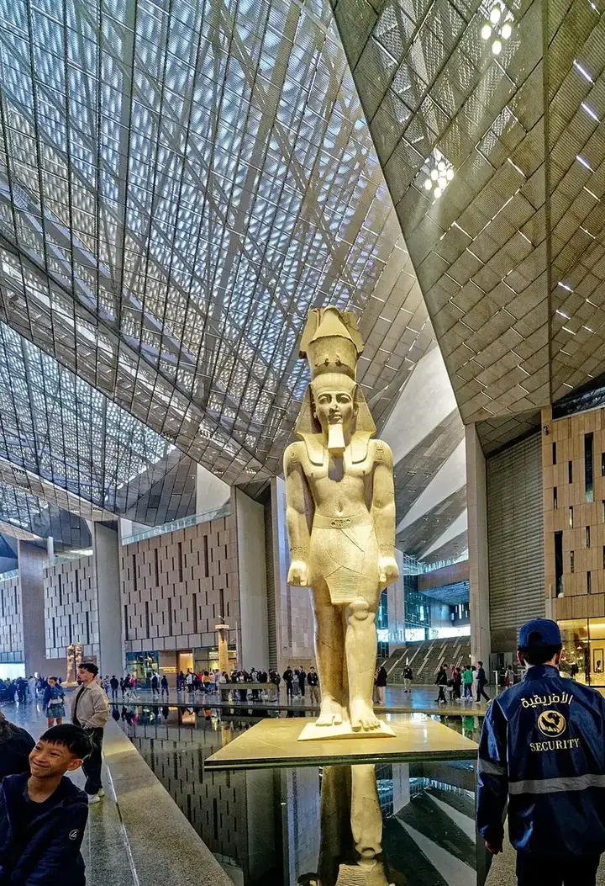
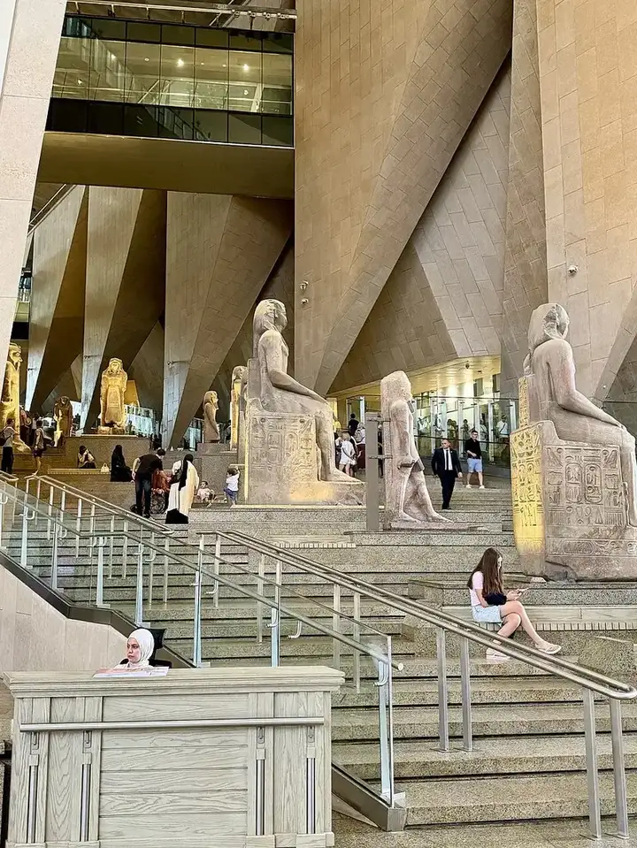
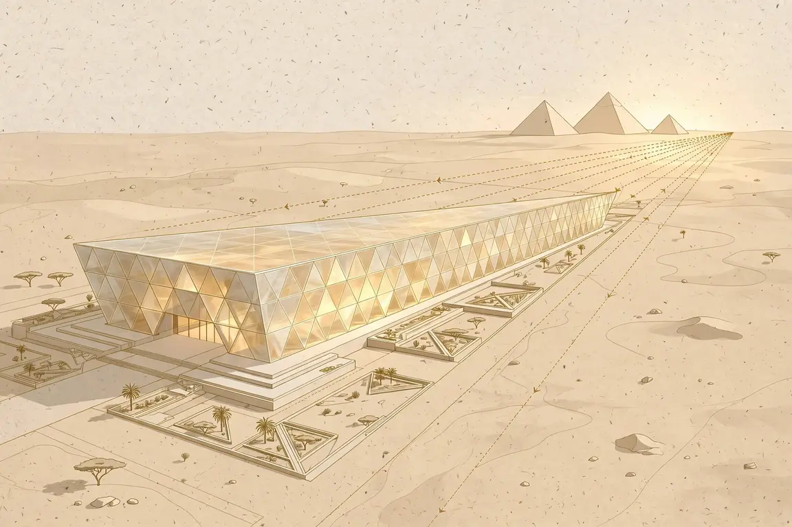
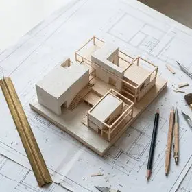
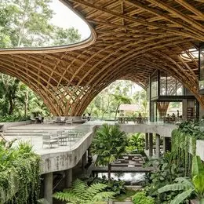
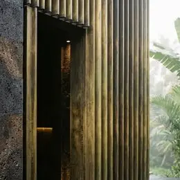
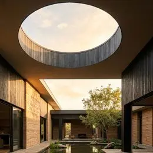

Artikel/Jurnal YFArchitect Studio · Terbit harian · Probolinggo, Jawa Timur
Artikel/Jurnal Arsitektur Dunia
Telaah pakar atas karya, metode desain, dan teknologi arsitektur dunia — ditulis dari sumber terverifikasi, dengan dokumentasi foto asli berkredit dan ilustrasi yang dilabeli jujur. Fokus kami visual: setiap artikel dibaca lewat gambar dokumentasinya.
5 artikel · Terakhir diperbarui 06 NOV 2026
Artikel/Jurnal Arsitektur Dunia · 06 NOV 2026 / ARSITEKTUR DUNIA
Bedah metode Grand Egyptian Museum: geometri baji sejajar piramida & fasad alabaster penyaring cahaya gurun
OBJEK & KONTEKS. Grand Egyptian Museum (GEM) di dataran Giza, Mesir — sekitar 2 km dari piramida — dirancang Heneghan Peng Architects (Irlandia) bersama Raafat Miller Consulting sebagai architect of record, dengan rekayasa Arup dan Buro Happold. Proyek ini lahir dari sayembara internasional 2002 yang diikuti lebih dari 1.500 entri dari 82 negara, dibangun bertahap sejak 2012, dan dibuka penuh pada 1 November 2025. Dengan luas bangunan ±81.000 m² dan koleksi lebih dari 100.000 artefak, GEM adalah museum terbesar di dunia yang didedikasikan untuk satu peradaban.
METODE 1 — GEOMETRI KONTEKSTUAL (ALIGNMENT). Denah bangunan dibentuk sebagai baji segitiga (chamfered triangle): dinding utara dan selatannya diarahkan tepat ke sumbu Piramida Khufu dan Menkaure, sehingga piramida selalu hadir sebagai titik akhir visual dari dalam bangunan. Atapnya naik bertahap mengikuti kontur dataran, tetapi tidak pernah melampaui tinggi piramida — sebuah metode subordinasi massa: bangunan monumental yang sengaja 'menunduk' pada konteks yang lebih tua dan lebih besar.
METODE 2 — FASAD SEBAGAI SISTEM CAHAYA PASIF. Kulit bangunan tersusun dari panel segitiga alabaster lokal yang tembus cahaya (translucent), dipadukan dengan batu kapur Mesir dan kaca. Alabaster menyaring radiasi gurun yang keras menjadi cahaya difus yang relatif aman bagi artefak batu — prinsip yang sama dengan secondary skin: lapisan luar bekerja sebagai filter radiasi sekaligus identitas material. Massa termal beton yang besar membantu menstabilkan suhu ruang, mengurangi beban pendinginan aktif di iklim gurun.
METODE 3 — SIRKULASI SEBAGAI NARASI (PROMENADE). Jantung bangunan adalah Grand Staircase enam lantai: pengunjung menaiki kronologi Mesir kuno secara fisik, melewati patung kolosal Ramses II (abad ke-13 SM) di atrium, hingga mencapai Galeri Tutankhamun di lantai puncak — tempat lebih dari 5.000 artefak makamnya dipamerkan lengkap untuk pertama kalinya, dengan desain pamer oleh Atelier Brückner. Sirkulasi di sini bukan koridor, melainkan alat kuratorial.
RELEVANSI UNTUK PRAKTIK TROPIS INDONESIA. Tiga pelajaran terukur: (1) kulit penyaring cahaya pasif ala alabaster sejalan dengan kisi/secondary skin pada fasad tropis kami — bedanya, di iklim lembap filter cahaya wajib dipasangkan dengan ventilasi silang, bukan massa termal semata; (2) alignment geometri ke landmark adalah metode konteks yang dapat diterapkan pada tapak dengan orientasi kuat (gunung, laut, sumbu kota); (3) tangga sebagai narasi ruang efektif untuk rumah bertingkat dan ruang publik skala kecil.
SUMBER & FOTO. ArchDaily, 'The Grand Egyptian Museum Fully Opens' (2025); The Plan, 'Opening of the Grand Egyptian Museum' (2025); Arquitectura Viva, 'Grand Egyptian Museum, Giza' (2025). Foto dokumentasi: Fatima Ayman (CC0) — fasad & gerbang piramida; Holger Uwe Schmitt (CC BY-SA 4.0) — Grand Hall & patung Ramesses II; Slyronit (CC BY-SA 4.0) — Grand Staircase; semua via Wikimedia Commons. Galeri artikel ini juga memuat satu ilustrasi diagram aksonometrik berbasis AI yang dilabeli sebagai ilustrasi.
Galeri dokumentasi & ilustrasi

FOTO ASLIGrand Hall: patung Ramesses II di bawah atap kisi alabaster — Holger Uwe Schmitt via Wikimedia Commons (CC BY-SA 4.0)

FOTO ASLIGrand Staircase: promenade kronologis enam lantai — Slyronit via Wikimedia Commons (CC BY-SA 4.0)

ILUSTRASI AIIlustrasi AI: diagram aksonometrik geometri baji GEM, sumbu terkunci ke piramida Giza — bukan foto
Artikel/Jurnal Arsitektur Dunia · 14 OCT 2026 / STRUKTUR & BIM
Keunggulan atap miring 1 sisi (mono-pitch) dengan kolom struktur menerus

DOKUMENTASI STUDIOStruktur kolom menerus rumah tropis atap miring 1 sisi — dokumentasi visual studio
Desain atap miring 1 sisi (mono-pitch) memberikan tampilan arsitektur tropis kontemporer yang tegas sekaligus mengoptimalkan pembuangan udara panas melalui bukaan kaca clerestory di sisi tertinggi. Kolom utama K1 dirancang menerus dari pondasi footplat bawah tanah hingga langsung menopang balok miring atap.
Artikel/Jurnal Arsitektur Dunia · 17 SEP 2026 / TECTONICS
Merancang kanopi carport 2 mobil bentang 5–7 meter tanpa tiang tengah

DOKUMENTASI STUDIOKanopi carport baja WF bentang 7 meter — dokumentasi visual studio
Agar manuver dua mobil di carport selebar 5025 mm tetap leluasa, kanopi depan menggunakan balok baja WF yang diangkur ke kolom tepi dan struktur beton lantai 2, dipadukan dengan plafon kisi kayu hangat.
Artikel/Jurnal Arsitektur Dunia · 20 AUG 2026 / TROPICAL FACADE
Kombinasi bata merah ekspos dan secondary skin kayu untuk iklim Probolinggo

DOKUMENTASI STUDIOSecondary skin kisi kayu & bata merah ekspos — dokumentasi visual studio
Kisi kayu vertikal pada sisi kanan balkon lantai 2 bertindak sebagai filter cahaya dan panas matahari, sementara dinding bata merah ekspos di lantai dasar memberikan karakter material yang hangat dan tahan cuaca.
Artikel/Jurnal Arsitektur Dunia · 15 JUL 2026 / LAYOUT PLAN
Menyusun 4 kamar tidur, musholla & void taman pada kavling lebar 7 meter

DOKUMENTASI STUDIOSirkulasi cahaya & void taman belakang — dokumentasi visual studio
Melalui penempatan void taman di sisi samping-belakang, seluruh ruang utama—mulai dari ruang keluarga, ruang makan, musholla, hingga kamar tidur utama—mendapatkan sirkulasi udara silang dan pencahayaan alami sepanjang hari.